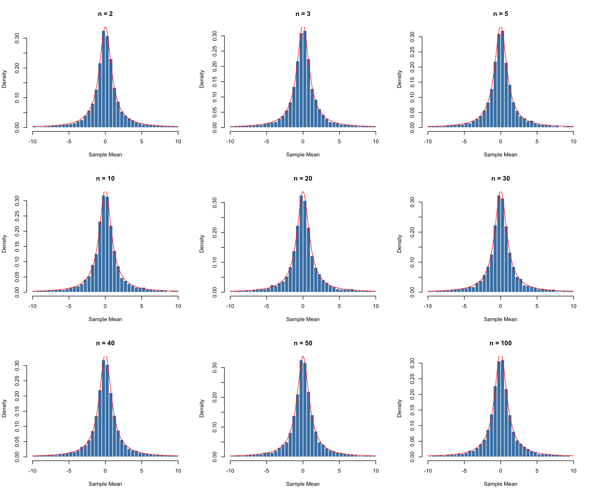
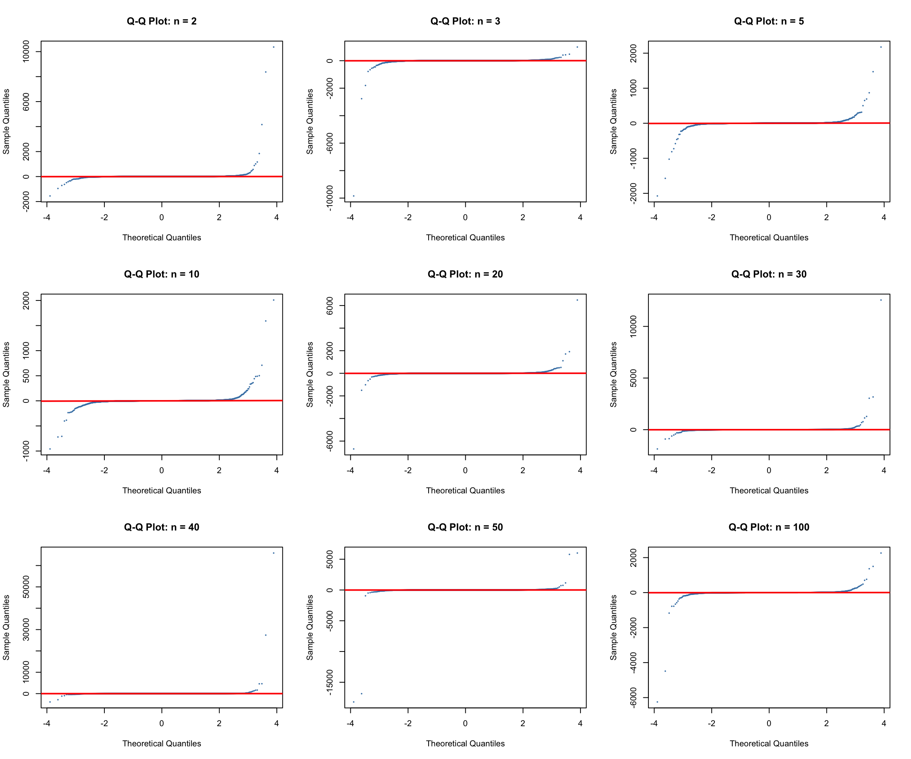

The original population follows a standard Cauchy distribution with location 0 and scale 1. It is symmetric around 0, but unlike the Normal distribution, it has very heavy tails, meaning extremely large or small values can occur. The theoretical mean and standard deviation are both undefined.
For this experiment, I will test different sample sizes to see how the sampling distribution of the sample mean changes as n increases. For each sample size, I will run 10,000 simulations. In each simulation, I will randomly generate n observations from a standard Cauchy distribution and calculate their mean.
For this experiment, we’ll compare the simulated sample means with the theoretical Cauchy curve in red, rather than a normal curve.
We won’t use a Normal curve because the Cauchy distribution has no defined mean or standard deviation.
par(mfrow =c(3, 3))for (n in sample_sizes) { means <- simulation_results[[as.character(n)]]# only display values between -10 and 10 plot_means <- means[abs(means) <=10]hist( plot_means,breaks =seq(-10, 10, by =0.5),probability =TRUE,main =paste("n =", n),xlab ="Sample Mean",col ="steelblue",border ="white" )curve(dcauchy(x, location =0, scale =1) / (pcauchy(10) -pcauchy(-10)),add =TRUE,col ="red",lwd =1 )}

par(mfrow =c(1, 1))
I notice that the histograms look almost identical across all sample sizes, with a tall peak around 0 and heavy tails on both sides. Even as n increases from 2 to 100, the distributions do not become narrower or more Normal, and they continue to follow the red Cauchy curve.
3.2 Normal Q-Q Plots
We’ll still use Normal Q-Q plots because the goal is to check whether the sampling distributions approach a Normal distribution.
par(mfrow =c(3, 3))for (n in sample_sizes) { means <- simulation_results[[as.character(n)]]qqnorm( means,main =paste("Q-Q Plot: n =", n),col ="steelblue",pch =16,cex =0.4 )qqline(means, col ="red", lwd =2)}

par(mfrow =c(1, 1))
I notice that the Q-Q plots show large deviations from the red reference line, especially at both tails where extreme values occur. Even as n increases from 2 to 100, the points do not follow the line more closely, suggesting that the sampling distributions are not approaching a Normal distribution.
Although n = 50 appears to follow the line closely, this is because an extreme value stretches the y-axis and compresses most of the points. Even at larger sample sizes, the distributions do not appear to become more Normal.
4. Numerical Evidence
For each sample size, I will calculate the average and standard deviation of the 10,000 simulated sample means. Since the Cauchy distribution has no defined mean or standard deviation, I cannot compare these results with theoretical values like I did in the previous experiments. Instead, I will examine whether the sample means become more stable as n increases.
I notice that the simulated means and the standard deviations fluctuate a lot as n increases, especially at n = 50, where the standard deviation reaches 1627.977. However, the medians stay close to 0, and the IQR remains around 2, showing that the sample means do not become more concentrated as the sample size increases.
5. Approximately Normal?
Selected sample size (n): None
I do not consider the sampling distribution approximately normal at any of the sample sizes tested. From the histograms, I notice that the distributions look almost identical from n = 2 to n = 100, with a tall peak around 0 and heavy tails on both sides. Unlike the previous experiments, the distributions do not become narrower as n increases.
The Q-Q plots also show large deviations from the red reference line, especially at the tails. Although n = 50 appears to follow the line closely, this is misleading because an extreme value stretches the y-axis and compresses most of the points.
The numerical results also support this conclusion. The simulated standard deviations fluctuate significantly, reaching 1627.977 at n = 50, while the IQR stays around 2 across all sample sizes. This shows that the sample means are not becoming more concentrated as n increases.
Since the Cauchy distribution has no defined mean or standard deviation, it does not meet the conditions of the usual Central Limit Theorem. Therefore, I cannot select a sample size where the sampling distribution becomes approximately normal.
6. Limitations and Surprises
One limitation of this experiment is that the Cauchy distribution can produce extremely large or small values, which makes the simulated means and standard deviation unstable. I also had to limit the histogram display to values between -10 and 10 to make the graphs easier to read. This means the histograms do not show all the extreme values, even though they are still included in the simulations.
One thing I found surprising was that the histograms looked almost identical across all sample sizes, even at n = 100. I also noticed that the Q-Q plot at n = 50 appeared to follow the red line, but this was actually caused by an extreme value stretching the y-axis. This showed me that a graph can sometimes be misleading if the scale is different.
7. Conclusion
The Cauchy experiment showed that increasing the sample size does not always make the sampling distribution of the sample mean approximately normal. Based on the histograms, Q-Q plots, and numerical evidence, I could not find any sample size where the distribution became approximately normal.
As n increased, the histograms continued to have a similar shape and spread, while the Q-Q plots showed large deviations from the Normal reference line. The simulated standard deviations also fluctuated significantly, and the IQR stayed around 2, showing that the sample means were not becoming more concentrated.
Since the Cauchy distribution has no defined mean or standard deviation, the usual Central Limit Theorem does not apply. In fact, the average of independent standard Cauchy observations still follows a standard Cauchy distribution, no matter how large n becomes. Therefore, there is no sample size where the sampling distribution approaches a Normal distribution.